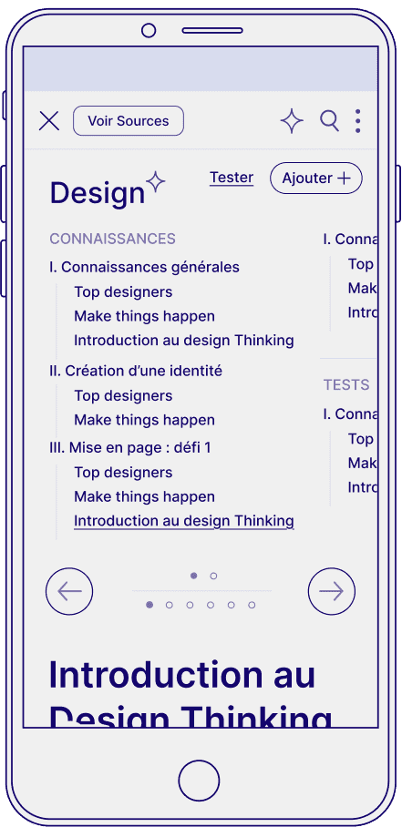
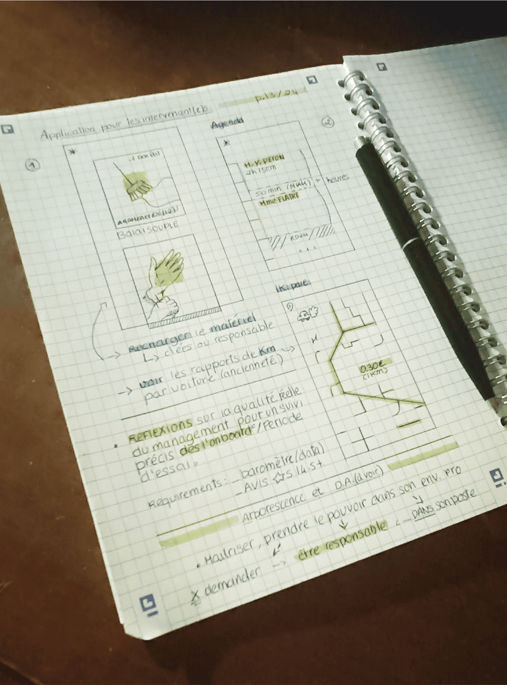
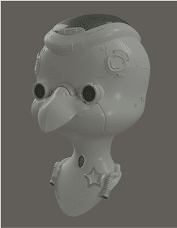
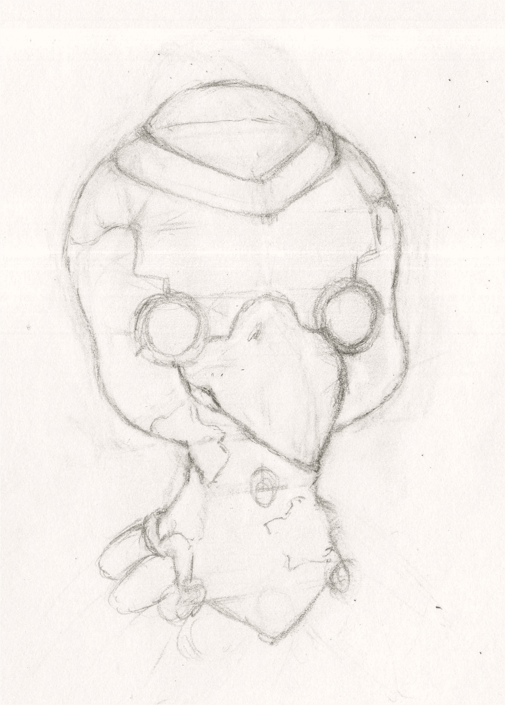

.png)
.png)
.png)
.png)
.png)
.png)
.png)
.png)
Bonjour
/Jade, 21 ans
Apprentie designer
Numérique (Bac+5)
Je m’appelle Jade et je suis ravie de vous partager
mon savoir, mes expériences, mes évolutions tout au long de ma
licence (je suis actuellement en soutenance). GSAP, Barba.js,
les thèmes wordpress (développement PHP) sont, pour moi des
terrains de jeu. Je peux même intégrer des éléments 3D et opti'
dans une page web - vous allez voir ça !
Mais tout d'abord, parlons "scolarité". Pour mon master, j’étudie
à l’
École de Design Nantes Atlantiques
pour un Bac+5. Mon objectif est donc de devenir votre apprentie
sur 2 ans. Oui, votre entreprise, et vous-même, n'êtes pas sur ma
page par hasard. Vous qui allez au-delà du design "numérique",
vous avez cette capacité de créer un nouveau web. Vers un monde
plus orienté vers l'UX, l'authentiticité et la force de
l'accessibilité... Je serais sûrement prête à m'engager sur votre
chemin.
Si nous partageons ensemble cette vision commune, c'est parce
que je suis fortement "autodidacte" par nature. Je puise
constamment dans mes avancées par la lecture (comme avec
ce livre), les sorties et mes autres loisirs comme le dessin.
/PETITE INFORMATION :: Si vous avez envie d'échanger, même si
ça ne concerne que des petites choses, n'hésitez pas. Je suis
également au sein de l'association Kernel (design), et du
Coding Creatif (de Martin Cailleau) à STEREOLUX à Nantes!
Design PROCESS
O1
Présentation de ma philosophie créative (design, centres
d'intérêt)
Ici vous verrez quelques explorations créatives que
j'aborde pour alimenter mes recherches et mes réflexions.
Tout n'est pas forcément en parallèle des projets mais
cela me permet de diversifier ma Culture.
Il n'y a rien de plus important à mes yeux de de capturer
les forces, faiblesses, enjeux d'un projet dans la phase de
recherche.
Mon carnet me permet de faire l'inventaire de l’ existant et
de l'avoir toujours sur moi.
< mars
<Novembre 2023

Novembre 2024 >

< 1er janvier
O1
Création optimisée pour le web, Modélisation, rig et
animation 3D
Lorsque je dois utiliser de la 3D dans mes projets,
j'utilise Three.js (librairie javascript) pour générer une
scène sur le web / Blender.
En guise de démonstration, voici une petite "couronne" en
OpenGL rien que pour vous...
D'autres manières existent comme : faire des renderings
vidéos et de les intégrer ensuite (optimisation++)
J'aime beaucoup les modélisations complexes voir "créatives"
pour des jeux, des sites intéractifs
Mai 2023 >

2024 >

< 2024
2025 >
Projets PRO/SCO
/Pour finir notre excursion - restez bien attentif jusqu'au
bout car il ya du design intéractif satisfaisant en bas -
Voici 4 projets qui me tiennent à coeur de vous dévoiler. Je
suis déjà impatiente de pouvoir en discuter avec vous.
AXEO : Crm Original
Site internet pour la Paroisse St Colomban
Application "Prille" (PHP Wordpress)
AXEO : Projet Final
/AUTRE INFORMATION : JE RESIDE A NANTES ET JE PARTICIPE A DE
NOMBREUX EVENEMENTS : CREATIVE CODING CHEZ STEREOLUX,
INVITEE PAR Martin CAILLEAU (merci!) ET VIA L’ASSOCIATION
KERNEL...
Dernier mot
Mes compétences, bien qu’elles pourraient se confronter à
l’IA pour la 3D,
est créée pour l’optimisation. Je suis touche-à-tout mais
aussi concentrée sur le design que sur la communication au
sein d’une équipe.
Le dessin, le dev et la création de sites internet sont mes
trois passions.
Mais le développement de toutes mes compétences se doivent
d’être coordonnées par l’UX design et l’UI. Je suis très
heureuse de faire ce que je fais aujourd’hui et j’espère que
vous verrez toute ma “passion” et ma considération pour le
numérique
Merci, Si vous avez aimé mon travail ou que vous en
ressentez l'envie,
contactez moi !
(jade.peresson@gmail.com)
Tél : 07 88 85 02 55